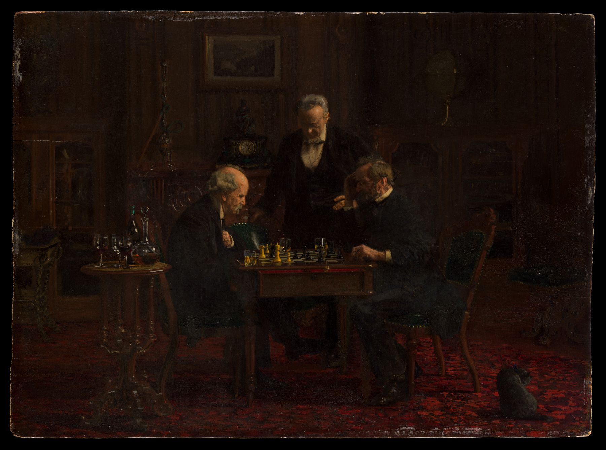

No. 01
Ember
Security tool, Python
Free models on Roblox sometimes hide a script that loads code from someone else's account and takes over
the game server. Ember opens .rbxm and .rbxl files directly, pulls out every
script, and reads each one the way an attacker writes it: IDs hidden in arithmetic, names spelled with
string.char, code pushed two hundred columns off-screen.
- Rules
- 15 detections, from remote
requireto disguised script names - Reads
- Binary and XML model and place files, no Roblox Studio needed
- Checked
- About 2,800 open-source Roblox scripts, zero critical false alarms
- Ships as
- Command line tool, Python library and GitHub Action